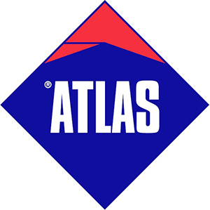

Fìor Insulation & Fire Protection Ltd are a privately owned Irish company specialising in home and commercial insulation and fire protection services. We offer our customers over 40 years of industry experience. We offer a one-stop solution for your fire protection requirements.
Our insulation services include External and Internal insulation, and Attic insulation. Our teams survey your home or business premises and advise the customer on which insulation system is best suited for their property.
The correct home insulation is vital as it will improve heating bills by 35-40%, improve BER rating, reduce carbon footprint and add value to your home and business, Our teams and staff will guide the homeowner with a grant application as required. We are registered contractors with SEAI and NSAI.
We also provide a complete turnkey service for all your fire stopping and compartmentation needs whether your project is a new build or refurbishment. The primary objective of passive fire protection is to control, prevent, contain or slow the spread of fire and smoke. This is achieved by installing the right products. We offer a comprehensive range of passive fire products, such as intumescent acrylic sealant, pipe collar intumescent wrap, Fire batt, fire doors, pipe penetrations, and cavity barriers, at competitive rates.